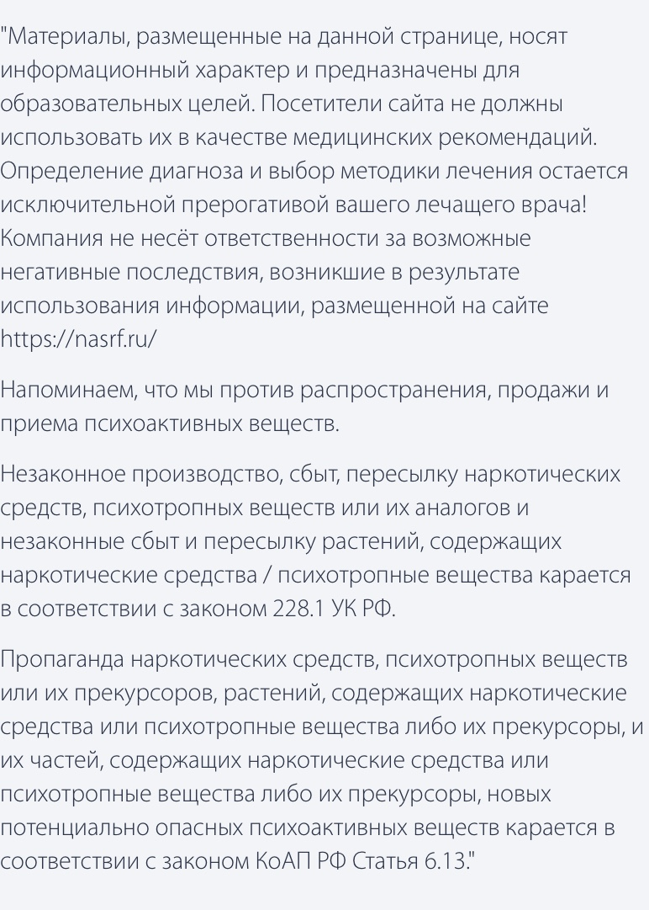
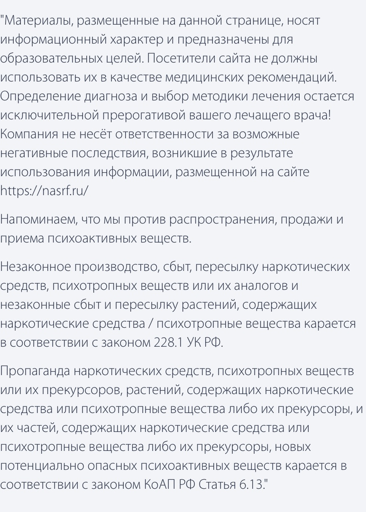

Применение лекарственного препарата «Метадона» из группы опиоидов началось в 40-х годах прошлого века в Германии. Медикамент оправдал надежды производителей на хороший обезболивающий эффект. Однако вскоре выяснилось, что препарат, помимо своего анальгезирующего действия, способен вызывать эйфорические ощущения, что послужило толком для развития метадоновой наркомании. У любого наркозависимого пациента, принимающего этот препарат, развиваются характерные внешние признаки и изменения в поведении. Именно об этом мы и поговорим далее.
Как выглядит «Метадон»?
Лицензированные фирмы-производители выпускают «Метадон» для людей, включенных в программу снятия наркозависимости, в разных формах. Особенность препарата — достаточный анальгезирующий эффект, наступающий спустя 30 минут после приема внутрь. Сторонники лекарства подчеркивают, что перевод наркоманов с «иглы» на таблетки помогает избежать заражения СПИДом. Официальная медицина использует препарат в таблетках по 5 и 10 мг. Они маленького размера, белого цвета с гравировкой на поверхности.
В стационарных условиях применяют ампульный препарат по 1 мл (10 мг). Раствор прозрачен, вводится подкожно и внутримышечно, иногда в вену. Оставляет флебиты, изменения на коже в месте инъекции.
Специально для обеспечения программы лечения и необходимой схемы назначения изготавливают средство в форме порошка, жидкости (1 мг на мл), ректальных свечек, распадающихся при растворении дискет. Применяются индивидуальные прописи сладкого сиропа, микстуры от кашля с цветовой маркировкой (раствор имеет зеленый или желтый цвет).
Свойства
Препарат получен с помощью химических преобразований, является синтетическим средством. Главное действие — блокада передачи нервного импульса перераздражением µ-опиоидных рецепторных окончаний в головном и спинном мозге, гипофизе, гладкомышечной ткани сердца, сосудов, желудочно-кишечного тракта. Положительный эффект — снятие боли.
При инъекционном введении аналгезия наступает через 10 минут, таблетки всасываются в кровоток спустя полчаса. Препарат способен накапливаться (кумулироваться) в тканях с созданием «депо». Наибольшей чувствительностью обладают жировые клетки. Поэтому, если вещество длительно поступало в организм полного человека, то оно закрепилось в жировой прослойке.
При похудении в кровоток выходит дополнительное количество наркотика, концентрация растет и вызывает передозировку. Препарат выводится через почки и кишечник. Однократная доза исчезает через 3 дня. При системном приеме для очищения кровотока необходимо до месяца.
Способы использования наркоманами
Лечебные дозы назначаются психиатрами индивидуально в таблетках. Чтобы не дать возможности использовать завышенное количество для наркотического действия, применяют уколы 1 раз в день.
Основной путь использования — прием внутрь. Вещество не разлагается под действием соляной кислоты желудка, всасывается в кишечнике. Таблетки и порошок горькие на вкус, их до употребления разводят в кислых напитках. При срочной потребности наркозависимые растирают таблетки в порошок, растворяют его в воде и самостоятельно вводят в вену.
Микстуру сложно контролировать. Прием внутрь позволяет спустя 2 часа достичь максимального метадонового «кайфа», который продолжается до 6 часов.
«Метадон» не курят, как листья коки, «крэк», героин, а также не вдыхают эндоназально. Препарат не испаряется при нагревании. Данных о производстве особых сигарет не имеется. Желающих проверить, можно ли курить «Метадон», нужно предупредить о смертельной опасности: непосредственный контакт препарата с рецепторным аппаратом бронхов вызывает внезапный спазм, выражающийся в тяжелом приступе бронхиальной астмы (астматический статус). Вывести человека из него чрезвычайно трудно.
Симптомы действия «Метадона»
Признаки приема «Метадона» проявляются прежде всего исчезновением болевых ощущений, если они были у пациента. Терапевтическая дозировка вызывает легкое состояние опьянения (эйфорию), улучшение настроения. Наркотические свойства нарушают функционирование внутренних органов, заметно изменяют поведении.
Поскольку препарат влияет на передачу нервного импульса к гладкой мускулатуре, симптоматика касается органов и систем, где она расположена: кровеносных сосудов и миокарда (сердечная мышца), выводных путей мочевого пузыря, желчных протоков, кишечника, стенок бронхов, зрачкового рефлекса. Нарушение тонуса способствует возникновению внешних признаков, отличающих наркозависимого человека от других людей.
Обращает внимание чрезмерная потливость в обычных условиях без жары и выполнения физической нагрузки. По общему виду можно предположить выраженную усталость, слабость. Более внимательное наблюдение показывает сужение зрачков под воздействием «Метадона», которое длится до 24 часов после приема.
Поведение человека под «Метадоном»
Чувство эйфории сопровождается ощущением безопасности, беспричинным весельем, болтливостью, повышенной работоспособностью. Отношение к окружающим выражает беззаботность, благодушие. Например, не возникает реакции на неприятные события, претензии, угрозы. Даже смерть близкого человека воспринимается совершенно спокойно.
Рис. 1: Поведение человека под Метадоном
Изменяется ориентация на знакомой территории: у себя в квартире наркоман «ищет» кухню или дверь, забывает, где находятся привычные предметы на рабочем месте, на улице теряется. При дальнейшем развитии привыкания приятные ощущения потребуют увеличения дозировки «Метадона». У пациентов благодушное настроение сменяется раздражительностью, подозрительностью. В поведении появляется рассеянность, невнимательность, болтливость исчезает. Длительный прием препарата изменяет личность до неузнаваемости: характер становится агрессивным, возможны бредовые идеи, галлюцинации.
Смертельно опасно!
Самым страшным последствием является необратимая умственная деградация
Необходимо как можно раньше распознать зависимость и начать ее лечить.
Действие на сердце и сосуды
О степени влияния на внутренние органы можно судить по действию «Метадона» на мышцу сердца. Объективные признаки исследования показывает ЭКГ: урежается ритм сокращений (брадикардия), появляются разные виды блокад, снижение проводимости, нарушения электролитного состава. Атония сосудистого русла сопровождается расширением сети капилляров, что приводит к падению давления: человек бледен, чувствует головокружение, заметна шаткая походка. В тяжелых случаях возникает острая недостаточность кровообращения с развитием отека легких, остановкой сердца.
Признаки угнетения дыхания
Замедление ритма дыхания и переход от глубокого на поверхностный тип — признак центрального действия на определенные зоны головного мозга. На фоне сна дыхание становится редким, возможна смерть от его остановки (апноэ).
Раздражение периферических нервных окончаний в стенке бронхов приводит к стойкому спазму. Клинически он выражается астматическим статусом с удушьем. Снять приступ обычными бронхолитиками и гормонами невозможно. Из-за подавления кашлевого рефлекса прекращается выделение мокроты, очищение бронхов. Слизистая оболочка становится беззащитной для патогенных бактерий. Проникновение инфекции вызывает тяжелую пневмонию.
Влияние на другие органы
У наркозависимых от «Метадона» часто возникают боли в подреберье справа, вызванные нарушением тонуса желчевыводящих путей (дискинезией). Влияние на мускулатуру кишечника проявляется стойкой атонией и запорами, возможно образование частичной или полной кишечной непроходимости с каловым завалом.
Нарушенная иннервация мочевыводящих путей сопровождается спастическим сокращением мочевого пузыря, сфинктеров. У пациентов задерживается мочеиспускание, появляются рези, схваткообразные боли над лобком.
Женщины-наркоманки обращаются к гинекологу по поводу срыва менструального цикла. У мужчин исчезает половое влечение, возникает импотенция. Изменения вызываются действием «Метадона» центральную регулирующую функцию гипофиза.
Признаки передозировки
Если исчезает ощущение эйфории, наркоманы пытаются вернуть состояние опьянения с помощью увеличения прежней дозы «Метадона». Отсутствие чувства опасности способствует передозировке. Характерные симптомы доходят до крайней степени проявления, усугубляют общее состояние:
Рис. 2: Признаки передозировки Метадоном
- тошнота, рвота
- успокоенность переходит в сонливость затем в коматозное состояние
- снижение артериального давления вызывает обморок, усиливает и поддерживает мозговую кому
- сужение зрачков с отсутствием рефлексов на свет не исчезает
- дыхание редкое и поверхностное
- частота сердечных сокращений замедлена до 60 и меньше
- кожа бледная, покрыта липким холодным потом
При обнаружении у человека подобных симптомов необходимо вызвать бригаду «скорой помощи», поскольку без участия квалифицированных специалистов пациенту угрожает смертельный исход.
Сравнение с проявлением героиновой зависимости
«Метадоном» психиатры лечат героиновую зависимость. Цель программы — заменить тяжелый наркотик на более легкий с последующим снижением дозы и избавлением. Дозу препарата подбирают индивидуально. Предполагается снятие симптомов абстиненции от героина, но недопущение состояния метадонового наркотического опьянения. Для этого признаки контролируются закрепленным врачом. О разнице в симптоматике можно судить по приведенной таблице.
| Признак | Действие героина | Действие «Метадона» |
| Наиболее распространенный способ введения | Внутривенные инъекции с проявлениями рубцовых изменения на коже, флебитов | Прием внутрь таблеток, сиропа |
| Возможность курения | Применяется в курительных смесях, вдыханием через нос (остается порошок на лице) | Интраназально не применяется |
| Риски | Заражение СПИДом, вирусным гепатитом | Бронхопневмонии, кишечные инфекции, пищевые отравления |
| Длительность эффекта | Примерно 4 часа | До 24 часов |
| Достигнутое состояние эйфории | Выражено во много раз сильнее | Выглядит как легкое опьянение |
| Поведенческие нарушения | Наблюдаются две фазы: эйфория продолжается до 30 минут, затем наступает расслабленность, торможение | Эйфория наблюдается сутки |
Профессиональный колл-центр!
Звоните, и вы успеете спасти своего близкого человека!
Каждый день может стать последним!
- Круглосуточно
- Анонимно
- Бесплатно
Оба вещества принадлежат к одному классу опиоидных наркотиков, поэтому явные отличительные признаки выражены слабо. Сторонники замещающего способа лечения считают использование «Метадона» оправданной мерой, но России методика не применяется, и препарат запрещен к продаже. По мнению ведущих специалистов, вылечить возникшую метадоновую зависимость не менее трудно.
Выводы
Самостоятельно выявить метадонового наркомана невозможно. Признаки наркотического опьянения напоминают случаи употребления других опиатов, поэтому диагноз способен поставить только врач после обследования. Однако вполне возможно заподозрить человека в употреблении «Метадона» по измененному поведению, внешнему виду. Эффективность замещающей терапии с помощью препарата подвергается сомнению.
 
